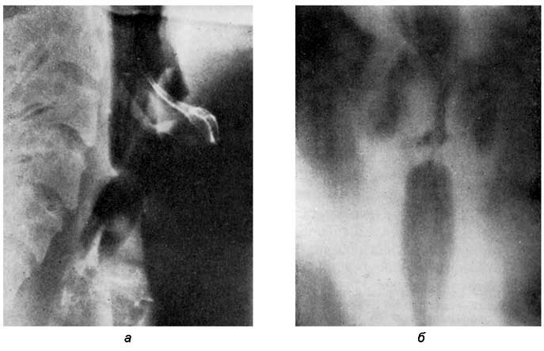
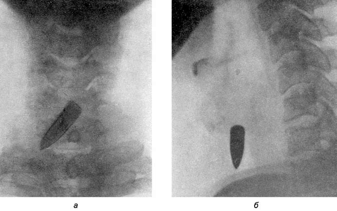

Повреждения гортани
Общие сведения
Повреждения гортани относятся к жизненно опасным травмам, которые, если не приводят к летальному исходу, часто обрекают пострадавшего на постоянное ношение канюли, инвалидность и значительное ухудшение качества жизни. Повреждения гортани, особенно если речь идет о проникающих ранениях, усугубляются соседством крупных кровеносных сосудов, нарушение целости которых в большинстве случаев приводит к быстрой гибели пострадавшего. Наличие по соседству крупных нервных стволов также является фактором, резко утяжеляющим клиническое течение повреждений гортани, поскольку их травмирование приводит к тяжелому шоку с выраженным нарушением функций жизненно важных нервных центров.
Сочетанные повреждения гортани, гортаноглотки и шейного отдела пищевода обусловливают возникновение нарушения питания естественным путем, что требует ряда непростых мероприятий по обеспечению этой жизненно необходимой функции. Таким образом, повреждения гортани могут повлечь за собой либо несовместимые с жизнью изменения в организме (асфиксия, кровотечение, шок), либо состояния, требующие немедленного оказания медицинской помощи по жизненным показаниям, что не всегда и не везде удается осуществить. В тех случаях, когда удается спасти пострадавшего, возникают другие проблемы, а именно обеспечение полноценного дыхания, приемлемого способа питания, предотвращения инфекции и посттравматических стенозов гортани, а в последующем — и ряда долгих реабилитационных мероприятий, направленных на восстановление естественных функций травмированных органов (гортани, пищевода, нервных стволов).
Повреждения гортани делятся на наружные и внутренние. К наружным относятся тупая травма и ранения, к внутренним — термические и химические ожоги, внутренние ранения гортани колющими и режущими инородными телами и собственно инородные тела, вызывающие, помимо обструкции, пролежни, некроз, вторичное инфицирование. К внутренним повреждениям относятся также и последствия длительной интубации (интубационные гранулемы, кисты, пролежни) и ятрогенные повреждения (вынужденные или возникшие случайно во время эндоларингеального хирургического вмешательства).
Наружные травмы гортани
Этиология. Гортань, благодаря своему топографо-анатомическому положению, может быть признана органом, достаточно хорошо защищенным от внешнего механического воздействия. Сверху и спереди ее защищают нижняя челюсть и щитовидная железа, снизу и спереди — рукоятка грудины, с боков — сильные грудино-ключично-сосцевидные мышцы, а сзади — тела шейных позвонков. Кроме того, гортань — подвижный орган, который при механическом воздействии на него (удар, давление) легко амортизирует, смещается как en mass, так и частями, благодаря суставному аппарату. Однако при чрезмерной силе механического воздействия (тупая травма) или при колюще-режущих и огнестрельных ранениях степень повреждения гортани может варьировать от легкой до тяжелой и даже несовместимой с жизнью.
Наиболее частыми причинами наружной травмы гортани являются: а) удары передней поверхностью шеи о выступающие твердые предметы (рулевое колесо или руль мотоцикла, велосипеда, перила лестницы, спинка стула, край стола, натянутый кабель или проволока и др.); б) прямые удары по гортани (ладонью, кулаком, ногой, копытом лошади, спортивным снарядом, брошенным или оторвавшимся при вращении агрегата предметом и др.); в) суицидальные попытки посредством повешения; г) ножевые колюще-режущие, пулевые и осколочные ранения гортани.
Наружные травмы гортани могут быть классифицированы по критериям, имеющим определенное практическое значение как для соответствующего морфолого-анатомического диагноза, так и для определения степени тяжести поражения и принятия адекватного решения по оказанию помощи пострадавшему.

Классификация наружных повреждений гортани I. Ситуационные критерии 1. Бытовые: а) в результате несчастного случая; б) с целью убийства; в) с целью самоубийства.
2. Производственные: а) в результате несчастного случая; б) в результате несоблюдения техники безопасности.

3. Травмы военного времени.
II. По степени тяжести 1. Легкие (непроникающие) — травматические повреждения в виде ушибов или касательных ранений без нарушения целости стенок гортани и ее анатомического строения, не вызывающие немедленных нарушений ее функций.
- Средней тяжести (проникающие) — травматические повреждения в виде переломов хрящей гортани или проникающие ранения тангенциального характера без существенных разрушений и отрывов отдельных анатомических образований гортани с немедленным нетяжелым нарушением ее функций, не требующим экстренной помощи по жизненным показаниям.
- Тяжелые и крайне тяжелые — обширные переломы и размозжения хрящей гортани, резано-рубленые или огнестрельные ранения, полностью блокирующие ее дыхательную и фонаторную функции, не сочетающиеся (тяжелые) и сочетающиеся (крайне тяжелые и несовместимые с жизнью) с ранением магистральных артериальных сосудов шеи.
III. По анатомическим и топографо-анатомическим критериям 1. Изолированные повреждения гортани.
А. При тупой травме: а) разрыв слизистой оболочки, внутреннее подслизистое кровоизлияние без повреждения хрящей и вывихов суставов; б) перелом одного или нескольких хрящей гортани без их дислокации и нарушения целости суставов; в) переломы и отрывы (разъединение) одного или нескольких хрящей гортани с разрывами суставных сумок и вывихов суставов.
Б. При огнестрельных ранениях: а) касательное ранение одного или нескольких хрящей гортани при отсутствии проникновения в ее полость или наличия проникновения в один из ее анатомических отделов (преддверие, голосовая щель, подскладочное пространство) без существенного нарушения дыхательной функции; б) проникающее слепое или сквозное ранение гортани с нарушением разной степени дыхательной и голосовой функций без сочетанного повреждения окружающих анатомических образований; в) проникающее слепое или сквозное ранение гортани с нарушением разной степени дыхательной и голосовой функций с наличием повреждений окружающих анатомических образований (пищевода, сосудисто-нервного пучка, позвоночника и др.).
Патогенез и патологическая анатомия. При тупых наружных травмах гортани могут возникать ушибы, контузии, разрывы мягких тканей, переломы и различной тяжести раздробления хрящей гортани, вывихи суставов, а также сочетанные повреждения окружающих гортань анатомических образований. Ушибы вызывают шоковое состояние, в то время как контузии, переломы, вывихи, раздробления нарушают морфологическую и анатомическую структуру и целостность гортани, обусловливая возникновение кровотечений и повреждение ее нервного аппарата. Вывихи суставов и разрывы их сумок, кровоизлияния нарушают подвижность надгортанника, черпаловидных хрящей, в результате чего страдают запирательная, дыхательная и голосовая функции, а наличие кровотечения приводит к аспирации крови и, в зависимости от его интенсивности, к осложнениям — от аспирационной пневмонии до асфиксии.
В ближайшее время после травмы возникает интерстициальный отек гортани, особенно выраженный в области черпалонадгортанных складок и черпаловидных хрящей. Как правило, вывихи суставов гортани сочетаются с переломами ее хрящей, а в изолированном виде встречаются крайне редко. У детей и лиц молодого возраста, когда еще не начался процесс кальцификации хрящей и благодаря их эластичности и подвижности гортани относительно позвоночника, эти повреждения наступают реже, чем у лиц старше 40–50 лет.
Чаще всего перелому подвергается щитовидный хрящ, при этом разрушение проходит по срединной линии, соединяющей боковые пластинки; также часто возникают переломы и рогов щитовидного хряща. При повешении чаще всего возникают переломы верхних рогов и подъязычной кости. Перелом перстневидного хряща происходит в области его дуги или ближе к пластинке перед перстнечерпаловидным суставом, как правило сочетаясь вместе с переломом нижних рогов щитовидного хряща и разрывом верхней и нижней перстнероговых связок. Одновременно с этими повреждениями возникают и вывихи черпаловидных хрящей в перстнечерпаловидных суставах.
Характер переломов хрящей зависит от точки приложения, направления и величины травмирующей силы. Они могут быть открытыми (с нарушением целости слизистой оболочки) и закрытыми — без последнего. Смещенные отломки хряща травмируют слизистую оболочку, перфорируют ее, что вызывает внутреннее кровотечение (угроза аспирационной асфиксии) и эмфизему окружающих гортань межтканевых пространств (угроза компрессионной асфиксии). Наиболее массивная эмфизема возникает в тех случаях, когда повреждение хрящевого каркаса и слизистой оболочки локализуется в подскладочном пространстве из-за того, что в этом случае образуется своеобразный вентиль, механизм которого заключается в том, что выдыхаемый воздух, встречая препятствие на уровне голосовой щели, сомкнутой в результате нарушения подвижности черпаловидных хрящей, устремляется под давлением через разрывы слизистой оболочки в окружающие ткани, при этом обратного хода ему нет из-за клапанного механизма, образующегося флотирующими частями разорванной слизистой оболочки. При таких травматических повреждениях гортани эмфизема может достигать средостения, препятствуя сердечной диастоле. Из вторичных осложнений следует отметить абсцессы и флегмоны, перихондрит, рубцовые деформации гортани, медиастинит, сепсис.
При проникающих ранения гортани (колотые, резаные, огнестрельные ранения) ее полость может быть открыта в различных направлениях, сообщающих ее с пищеводом, средостением, предпозвоночным пространством, а в особо тяжелых случаях — с крупными венами и артериями шеи. Резаные раны, происхождение которых обусловлено попыткой убийства или самоубийства, имеют поперечное направление, у правшей — слева направо, располагаются выше переднего края щитовидного хряща, захватывают срединную щитовидную и подъязычно-надгортанные связки, а также надгортанник. При перерезке мышц, фиксирующих гортань к подъязычной кости, в частности щитоподъязычной мышцы, гортань под действием грудинощитовидных мышц опускается книзу и выдвигается вперед, что делает обозримой полость гортани через раневое отверстие. Эта конфигурация ранения обеспечивает пострадавшему относительно свободное дыхание через рану и оказание экстренной помощи на месте происшествия путем разведения ее краев для свободного доступа воздуха. Если режущий предмет (нож, бритва, канцелярское выдвижное лезвие) попадает на плотный щитовидный хрящ, то он соскальзывает вниз и разрезает перстнещитовидную связку (мембрану), начинающуюся на дужке перстневидного хряща и прикрепляющуюся к нижнему краю щитовидного хряща. В этом случае полость гортани становится обозримой снизу, а начальные отделы трахеи — сверху. Это обстоятельство также позволяет проводить экстренные мероприятия по обеспечению дыхания, например путем вставления в трахею через раневой канал трахеотомической канюли.
При ранениях, расположенных между перстневидным хрящом и трахеей, полностью их разъединяющих, трахея проваливается в средостение; одновременно возникает сильное кровотечение из поврежденной щитовидной железы. Сонные артерии и другие сосуды, благодаря тому, что их прикрывают мощные грудино-ключично-сосцевидные мышцы, и тому, что обычно при нанесении травмы голова рефлекторно отклоняется кзади, а вместе с ней смещаются кзади и крупные сосуды шеи, редко подвергаются травме, что, как правило, спасает жизнь пострадавшего.
Огнестрельные ранения гортани являются самыми тяжелыми и часто из-за поражения соседних жизненно важных органов (сонные артерии, спинной мозг, крупные нервы) несовместимы с жизнью. Поражающими объектами при этих ранениях являются осколки разрывных средств (гранаты, мины, снаряды и др.), пули и вторичные поражающие объекты (камни, стекла и др.). Самые обширные разрушения гортани наносятся при осколочных ранениях, поскольку зона разрушения значительно выходит за пределы самой гортани.
При наружных травмах повреждению могут подвергаться и нервы гортани: либо прямому — от ранящего орудия, либо вторично — от сдавления отеком, гематомой, фрагментом хряща. Так, поражение возвратного нерва указанными факторами приводит к его параличу и приведению голосовой складки к медиальной линии, что значительно ухудшает дыхательную функцию гортани с учетом быстро развивающегося интерстициального отека.
Симптомы и клиническое течение зависят от вида травмы (ушиб, сдавление, ранение) и ее тяжести. Основными и первыми симптомами наружной механической травмы являются шок, дыхательная обструкция и асфиксия, а также кровотечение — наружное или внутреннее, в зависимости от поврежденных сосудов. При внутренних кровотечениях к механической обструкции дыхательных путей присоединяются явления аспирационной асфиксии.
При контузиях гортани, даже если не выявляются наружные признаки ее повреждения, возникает выраженное шоковое состояние, которое может привести к быстрой рефлекторной смерти пострадавшего от остановки дыхания и нарушения сердечной деятельности. Исходными точками этого фатального рефлекса являются чувствительные нервные окончания гортанных нервов, каротидный синус и периваскулярные сплетения блуждающего нерва. Шоковое состояние обычно сопровождается потерей сознания, по выходе из которой больной ощущает боли в области гортани, усиливающиеся при попытке глотания и разговоре, иррадиирующие в ухо (уши) и затылочную область.
Особым клиническим случаем является повешение, представляющее собой сдавление шеи петлей под тяжестью собственного тела, приводящее к механической асфиксии и, как правило, к смерти. Непосредственной причиной смерти могут быть собственно асфиксия, нарушение мозгового кровообращения за счет пережатия яремных вен и сонных артерий, остановка сердца в результате перераздражения блуждающего и верхнегортанного нервов вследствие их сдавления, повреждение продолговатого мозга зубовидным отростком II шейного позвонка при его вывихе. При повешении могут возникать травмы гортани разного вида и локализации, в зависимости от положения странгуляционного орудия. Чаще всего это переломы хрящей гортани и вывихи суставов, клинические проявления которых обнаруживают лишь в том случае, если спасение больного произошло своевременно, даже в случаях клинической смерти, но без последующего синдрома декортикации — выключения мыслительной, чувствительной и некоторых иных функций коры головного мозга, при которых жизненные процессы больного ограничиваются лишь растительным уровнем.
Ранения гортани, как уже было отмечено, делятся на резаные, колотые и огнестрельные. Чаще других встречаются резаные раны передней поверхности шеи, среди которых выделяют раны над костью, раны с повреждением щитоподъязычной мембраны, щитовидного хряща, раны, локализующиеся над и под перстневидным хрящом, раны чресперстневидные и гортанно-трахеальные. Кроме того, ранения в области передней поверхности шеи делят на ранения без повреждения хрящей гортани, с их повреждением (проникающие и непроникающие) и сочетанные ранения гортани и глотки, гортани и сосудисто-нервного пучка, гортани и тел шейных позвонков. По А. И. Юниной (1972), ранения гортани, руководствуясь клинико-анатомической целесообразностью, следует делить на ранения: 1) над- и подподъязычной области; 2) области преддверных и голосовых складок; 3) подскладочного пространства и трахеи с повреждением или без повреждения пищевода.
При ранениях первой группы неизбежно повреждается глотка и гортаноглотка, что значительно утяжеляет травму, осложняет оперативное вмешательство и намного удлиняет послеоперационный период. Ранение щитовидного хряща неизменно приводит к ранениям области голосовых складок, грушевидных синусов и нередко — черпаловидных хрящей. Этот вид ранения чаще всего приводит к обструкции гортани и возникновению удушья. Такие же явления возникают и при ранениях подскладочного пространства.
Повреждения гортани при резаных ранах могут быть различной тяжести — от едва проникающих до полной перерезки гортани с повреждением пищевода и даже позвоночника. Ранение щитовидной железы приводит к трудноостанавливаемому паренхиматозному кровотечению, а ранение крупных сосудов, встречающихся по отмеченным причинам значительно реже, нередко приводит к профузному кровотечению, которое, если немедленно не заканчивается смертью пострадавшего от кровопотери и гипоксии мозга, таит в себе опасность гибели больного от асфиксии, вызванной затеканием крови в дыхательные пути и образованием сгустков в трахее и бронхах.
Тяжесть и масштаб ранения гортани не всегда соответствуют величине наружной раны, особенно это относится к колотым ранам и пулевым ранениям. Сравнительно небольшие повреждения кожи могут скрывать глубоко проникающие ранения гортани, сочетающиеся с ранениями пищевода, сосудисто-нервного пучка, тел позвонков.
Проникающая резаная, колотая или огнестрельная рана имеет характерный вид: на выдохе из нее выходит пузырящийся кровавой пеной воздух, а на вдохе происходит засасывание воздуха в рану с характерным шипящим звуком. Отмечаются афония, приступы кашля, увеличивающего «на глазах» начинающуюся эмфизему шеи, распространяющуюся на грудь и лицо. Нарушения дыхания могут быть обусловлены как затеканием крови в трахею и бронхи, так и деструктивными явлениями в самой гортани.
Пострадавший с травмой гортани может находиться в состоянии травматического шока, в сумеречном состоянии или при полной утрате сознания. При этом динамика общего состояния может приобретать тенденцию движения к терминальному состоянию с нарушением ритмичности дыхательных циклов и сердечных сокращений. Патологичность дыхания проявляется изменением его глубины, частоты и ритма.
Дыхательная недостаточность. Учащение ритма дыхания (тахипноэ) и его урежение (брадипноэ) возникают при нарушении возбудимости дыхательного центра. После форсированного дыхания вследствие ослабления возбуждения дыхательного центра, вызываемого понижением содержания углекислоты в альвеолярном воздухе и крови, может наступить апноэ или длительное отсутствие дыхательных движений. При резком угнетении дыхательного центра, при тяжелой обструктивной или рестриктивной дыхательной недостаточности наблюдается олигопноэ — редкое поверхностное дыхание. К периодическим типам патологического дыхания, возникающим вследствие нарушения равновесия между возбуждением и торможением в ЦНС, относятся периодическое дыхание Чейна—Стокса, биотовское дыхание и «большое» дыхание Куссмауля. При поверхностном дыхании Чейна— Стокса1 поверхностные и редкие дыхательные движения становятся чаще и глубже и после достижения определенного максимума снова слабеют и урежаются, затем наступает пауза на 10–30 с и дыхание возобновляется в той же последовательности. Такое дыхание наблюдается при тяжелых патологических процессах: нарушении мозгового кровообращения, черепно-мозговой травме, различных заболеваниях мозга с поражением дыхательного центра, различных интоксикациях и др. Биотовское дыхание2 возникает при понижении чувствительности дыхательного центра — чередование глубоких вдохов с глубокими паузами до 1/2 мин. Оно характерно для терминальных состояний, часто предшествует остановке дыхания и сердечной деятельности. Встречается при менингите, опухолях мозга и кровоизлияниях в него, а также при уремии и диабетической коме. Большое дыхание Куссмауля3 (симптом Куссмауля (II)) — порывы судорожных, глубоких вдохов, слышимых на расстоянии, возникает при коматозных состояниях, в частности при диабетической коме, почечной недостаточности.
Шок (англ. shock — удар) — это тяжелый генерализованный синдром, развивающийся остро в результате действия на организм чрезвычайно сильных патогенных факторов (тяжелая механическая травма, обширный ожог, анафилаксия и др.). Основной патогенетический механизм составляют резкое расстройство кровообращения и гипоксия органов и тканей организма, и в первую очередь ЦНС, а также вторичные расстройства обмена веществ в результате расстройства нервной и гуморальной регуляции жизненно важных центров. Среди многих видов шока, обусловленных разного рода патогенными факторами (ожоги, инфаркт миокарда, переливание несовместимой крови, инфекция, отравления и т. п.), наиболее распространенным является травматический шок, возникающий при обширных ранениях, переломах с повреждением нервов и мозговой ткани. Наиболее типичное по своей клинической картине шоковое состояние возникает при травме гортани, при которой могут сочетаться четыре основных шокогенных фактора: боль при травме чувствительных гортанных нервов, дискоординация вегетативной регуляции вследствие повреждения блуждающего нерва и его ветвей, обструкция дыхательного пути и кровопотеря. Сочетание этих факторов во много раз увеличивает угрозу возникновения тяжелого травматического шока, нередко приводящего к летальному исходу на месте происшествия.
Основными закономерностями и проявлениями травматического шока являются: первоначальное генерализованное возбуждение нервной системы, обусловленное выбросом в кровь в результате стресс-реакции катехоламинов и кортикостероидов, что приводит к некоторому увеличению сердечного выброса, спазму сосудов, к гипоксии тканей и возникновению так называемого кислородного долга. Этот период называется эректильной фазой. Она кратковременна и не всегда может быть прослежена у пострадавшего. Для нее характерны возбуждение, иногда крик, двигательное беспокойство, повышение АД, учащение пульса и дыхания. Вслед за эректильной следует торпидная фаза, обусловленная усугублением гипоксии, возникновением очагов торможения в ЦНС, особенно в подкорковых отделах мозга. Наблюдаются расстройство кровообращения и нарушения обмена веществ; часть крови депонируется в венозных сосудах, уменьшается кровоснабжение большинства органов и тканей, развиваются характерные изменения в микроциркуляции, уменьшается кислородная емкость крови, развиваются ацидоз и другие изменения в организме. Клинические признаки торпидной фазы проявляются заторможенностью пострадавшего, ограничением подвижности, ослаблением реакции на внешние и внутренние раздражители или отсутствием этих реакций, значительным снижением АД, частым пульсом и поверхностным дыханием типа Чейна—Стокса, бледностью или синюшностью кожных покровов и слизистой оболочки, олигурией, гипотермией. Эти нарушения по мере развития шока, особенно при отсутствии лечебных мероприятий, постепенно, а при тяжелом течении шока — достаточно быстро, усугубляются и приводят к гибели организма.
Выделяют три степени травматического шока: I степень (легкий шок), II степень (шок средней тяжести) и III степень (тяжелый шок).
При шоке I степени (в торпидной стадии) сознание сохранено, но затуманено, пострадавший односложно отвечает на вопросы приглушенным голосом (при травме гортани, приведшей даже к легкой форме шока, голосовое общение с больным исключается), пульс 90–100 уд/мин, АД 100–90/60 мм рт. ст.
При шоке II степени сознание спутанное, заторможенность, кожа холодная, бледная, пульс 110–130 уд/мин, АД 85–75/50 мм рт. ст., дыхание частое, наблюдается уменьшение мочеотделения, зрачки умеренно расширены и вяло реагируют на свет.
При шоке III степени — затемнение сознания, отсутствие реакции на раздражители, зрачки расширены и не реагируют на свет, бледность и синюшность кожных покровов, покрытых холодным липким потом, частое поверхностное неритмичное дыхание, нитевидный пульс 120–150 уд./мин, АД 70/30 мм рт. ст. и ниже, резкое уменьшение мочевыделения вплоть до анурии.
При легком течении шоковой болезни под влиянием приспособительных реакций организма, а при шоке средней тяжести — дополнительно и под влиянием лечебных мероприятий, наблюдается постепенная нормализация функций и последующий выход из шока. Тяжелый шок нередко даже при самом интенсивном лечении приобретает необратимое течение и заканчивается смертью.
Диагноз наружных повреждений гортани не прост, как это может показаться на первый взгляд. Достаточно просто установить факт травмы и ее вид, однако очень трудно на первых порах оценить степень тяжести и установить характер внутренних повреждений как при ранениях, так и при тупых травмах. В первую очередь на месте происшествия медицинский работник оценивает состоятельность дыхательной функции гортани и исключает наличие кровотечения. В первом случае обращают внимание на частоту, ритмичность и глубину дыхательных движений и экскурсий грудной клетки, а также на признаки экспираторной или инспираторной одышки, проявляющиеся соответственно выбуханием или втяжением податливых поверхностей грудной клетки, цианозом, нарушением сердечной деятельности и беспокойством пострадавшего, а также нарастающей эмфиземой, свидетельствующей о разрыве слизистой оболочки, и образованием обструкции гортани, препятствующей выдоху. Во втором случае определить наличие наружного кровотечения легко, в отличие от внутригортанного кровотечения, которое может протекать скрытно, однако его выдают кашель и брызги алой крови, выделяющиеся вместе со струей воздуха через рот.
Проникающее ранение гортани проявляется шумным выдохом через раневое отверстие и кровавой пеной. Во всех случаях травмы гортани присутствуют такие симптомы, как нарушение дыхания, дис- или афония и очень часто дисфагия, особенно при повреждениях верхних отделов гортани и гортаноглотки. Переломы хрящей определяются при пальпации передней поверхности гортани (крепитация, дислокация).
На месте происшествия ургентная диагностика призвана установить показания к проведению экстренной медицинской помощи, заключающейся в обеспечении дыхания, остановке кровотечения и борьбе с шоком. В условиях стационара пострадавшего подвергают углубленному обследованию для оценки общего состояния и определения характера травмы. Как правило, пострадавших с тяжелой травмой гортани помещают в реанимационное отделение или непосредственно в операционную для оказания срочной хирургической помощи (окончательная остановка кровотечения путем перевязки сосудов, наложение трахеостомы и, если возможно, оказание специализированной или квалифицированной хирургической помощи). Если позволяет состояние, проводят рентгенологическое обследование гортани для выявления фрагментов хрящей, дислокации частей гортани, вывихов суставов и других признаков нарушения ее целости, определения гематом и эмфиземы. Рентгенологическое обследование должно касаться также подъязычной кости, трахеи, легких и грудной клетки. При подозрении на повреждение пищевода проводят фиброэзофагоскопию и контрастную рентгенографию.
Эндоскопическое обследование гортани целесообразно проводить сразу же после рентгенографии, которая дает представление о характере травмы гортани. Выполняют в основном прямую микроларингоскопию, позволяющую в деталях рассмотреть поврежденные участки гортани, определить их локализацию и распространенность.
Прогноз весьма серьезен, поскольку жизни пострадавшего угрожают шок, удушье, кровотечение, вторичные гнойные осложнения.
Внутренние травмы гортани
Внутренние травмы гортани относятся к менее травматичным повреждениям по сравнению с наружными ее травмами. Они могут быть ограничены повреждением лишь слизистой оболочки, но могут быть и более глубокими, повреждающими подслизистые слои и даже надхрящницу, в зависимости от причины повреждения. Осложняет внутренние травмы гортани вторичная инфекция, которая может провоцировать возникновение абсцессов, флегмон и хондроперихондритов с последующим выраженным рубцовым стенозом гортани.
Классификация внутренних травм гортани4 1. Острые травмы гортани: а) ятрогенные: интубационные, в результате инвазивных вмешательств (гальванокаустика, диатермокоагуляция, эндоларингеальные традиционные и лазерные хирургические вмешательства); б) повреждения инородными телами (колющими, режущими); в) ожоги гортани (термические, химические).
2. Хронические травмы гортани: а) пролежни, возникающие в результате длительной интубации или нахождения инородного тела; б) интубационные гранулемы.
Хронические травмы гортани чаще всего возникают у лиц, ослабленных длительными заболеваниями или острыми инфекциями (брюшной, сыпной тиф и др.), при которых снижается общий иммунитет и активизируется сапрофитная микробиота. Острые травмы гортани могут возникать при эзофагоскопии, а хронические — при длительном пребывании зонда в пищеводе (при зондовом питании больного). При интубационном наркозе нередко возникает отек гортани, особенно часто — в подскладочном пространстве у детей. Иногда острые внутренние травмы гортани возникают при форсированном крике, пении, кашле, чихании, а хронические — при длительной профессиональной голосовой нагрузке (узелки певцов, пролапс желудочков гортани, контактная гранулема).
Инородные тела гортани
Этиология. Инородные тела в гортани встречаются значительно реже, чем в трахее или в бронхах, и составляют приблизительно 10% — по Aubry и Lemariey, 14% — по П. Г. Лепневу5, и лишь 4% — по данным I. Ţeţu, от всех инородных тел дыхательных путей. Большинство из попавших в гортань инородных тел преодолевают ее пространство и застревают в правом главном бронхе, угол отхождения которого от трахеи значительно меньше, чем левого главного бронха. В гортани задерживаются главным образом остроконечные инородные тела (рыбьи и тонкие куриные кости, иглы, зубные протезы, фрагменты скорлупы грецкого ореха, металлические предметы). Нередко в гортани фиксируются пиявки, которые попадают в нее при питье воды из естественных водоемов — места их обитания. Наиболее часто инородные тела гортани встречаются у детей в возрасте 5–7 лет. Нередко инородные тела дыхательных путей наблюдаются у стариков с ослабленными защитными глоточным и замыкательным рефлексами и у психически больных лиц.
Патогенез. Инородные тела в гортань могут попадать из полости рта во время еды, из полости носа и носоглотки, куда они попадают во время детских игр и откуда аспирируются в гортань, а также ретроградно при кашле из трахеи и бронхов или во время рвоты из желудка и пищевода. Инородные тела гортани, относящиеся к ятрогенным, могут возникать во время аденотомии и тонзиллотомии (аспирация удаленной лимфаденоидной ткани, фрагмента хирургического инструмента). Наиболее частый механизм — внезапная аспирация инородного тела во время еды, при смехе, чихании, разговоре, неожиданном ударе по затылку. Аспирация инородного тела может произойти во сне, в состоянии опьянения или сонливости, при отвлечении внимания или испуге. Инородные тела гортани могут наблюдаться при некоторых бульбарных синдромах, при которых нарушается чувствительность глотки и гортани, при невритах чувствительных нервов гортани, огнестрельных ранениях.
Патологическая анатомия. Инородные тела гортани большей частью принадлежат к числу неподвижных, вклинившихся. Они застревают в гортани вследствие большого размера, неровности краев или шероховатой поверхности, а также в результате рефлекторного (защитного) спазма констрикторов гортани. По последней причине большинство инородных тел гортани застревают в межчерпаловидном пространстве над голосовой щелью; один из концов инородного тела может находиться в морганьевом желудочке, а другой — в области задней стенки гортани или в области передней комиссуры. В иных случаях инородное тело располагается в сагиттальной плоскости между голосовыми складками, фиксированное одним концом в передней комиссуре, другим — в задней стенке подскладочного пространства или в черпаловидной области. Инородные тела, застрявшие в гипофаринксе, провоцируют выраженный отек подскладочного пространства, особенно у детей. Проникнув вглубь, эти инородные тела обнаруживаются с трудом. По данным N. Costinescu, 50% инородных тел гортани, имеющих трахеобронхиальное происхождение, локализуются в подскладочном пространстве.
Инородные тела гортани, раздражая и травмируя слизистую гортани, обусловливают возникновение отека и воспаления, выраженность которых зависит от характера инородного тела, длительности его пребывания в гортани и присоединения вторичной инфекции. Острые инородные тела могут перфорировать гортань и проникать в соседние области. Эти перфорации служат входными воротами для вторичной инфекции (перихондрит, периларингеальные абсцессы, медиастинит, тромбоз наружной яремной вены). Длительное пребывание инородного тела в гортани вызывает пролежни, контактные язвы, контактные гранулемы, вторичное инфицирование, а после их удаления — рубцовый стеноз гортани.
Симптомы и клиническое течение. Инородное тело значительных размеров (кусок мяса, аденоидные разрастания, аспирированный тампон и др.), характеризующееся мягкой эластичной консистенцией, при рефлекторном спазме гортани, как правило, полностью ее перекрывает, не оставляя щелей и ходов для осуществления хотя бы минимального дыхания, очень часто приводит к смертельному исходу от асфиксии. При неполной обструкции гортани инородное тело провоцирует мощные средства защиты, из которых не все играют положительную роль, например защитный спазм, в то время как сильный пароксизмальный кашель, тошнота и рвота способствуют выталкиванию инородного тела как из гортаноглотки, так и из гортани. Очень быстро, в течение десятка секунд, наступает цианоз лица, на лице появляется выражение чрезвычайного испуга. Пострадавший начинает метаться, движения его становятся беспорядочными, хриплый голос и конвульсивные дыхательные движения тщетны. Такое состояние может продолжаться 2–3 мин, и если инородное тело не извергнуто или каким-либо способом не удалено, сознание быстро покидает больного, он впадает в кому — и наступает состояние клинической смерти. Вовремя не восстановленное дыхание (в течение 7–9 мин) приводит к гибели от остановки сердечной и дыхательной деятельности. При позднем восстановлении сердечной и дыхательной деятельности возникает угроза частичного или полного выключения корковых центров, развивается синдром декортикации различной глубины, в результате чего больной переходит к вегетативному образу жизни. Если инородное тело вклинивается между истинными голосовыми складками и мешает их смыканию, но остается пространство для минимального прохождения воздуха, наступает внезапная афония и возникает та или иная степень диспноэ. Прободение гортани инородным телом может привести к эмфиземе, особенно при экспираторном нарушении дыхания, когда над перфорацией возникает препятствие выдоху.
Диагностика инородных тел гортани в острых случаях не вызывает затруднений; она основывается на внезапности эксцесса, внешних признаках внезапного рефлекторного раздражения чувствительных рецепторов гортани, пароксизмальном кашле, дисфонии (афонии), диспноэ (апноэ). Труднее диагностировать хронические случаи при отставленном обращении к врачу. Чаще всего такие случаи наблюдаются при необструктивных инородных телах гортани, когда дыхание остается удовлетворительным, а вклинившемуся инородному телу сопутствуют различные местные осложнения (инфицированный пролежень, отек, перихондрит и др.). При огнестрельных инородных телах гортани особую роль играет рентгенологическое обследование.
Дифференциальный диагноз. Нередко в острых случаях симптомы могут симулировать функциональный спазм гортани (например, истерического генеза), дифтерийный круп, подскладочный ларингит, аллергический отек. У детей старшего возраста и у взрослых применяют непрямую ларингоскопию, позволяющую легко обнаружить инородное тело. У детей младшего возраста более эффективна прямая ларингоскопия, которая, помимо диагностики, преследует и лечебную цель — удаление инородного тела.
В тех случаях, когда больной обращается к врачу с значительным опозданием, предъявляя жалобы на охриплость голоса, периодический пароксизмальный кашель с отхаркиванием слизисто-гнойной мокроты, ощущение инородного тела в горле, одышку при физической работе, нередко и на вечерний субфебрилитет, наряду с наличием других заболеваний, следует заподозрить возможность хронического инородного тела гортани. Такие инородные тела при пребывании в гортани более 5 дней покрываются грануляционной тканью, слизисто-гнойными выделениями, что значительно затрудняет их поиск. В таких случаях целесообразно применять микроларингоскопию, позволяющую осматривать все части гортани, недоступные обычной прямой, и особенно непрямой, ларингоскопии. При пальпации гортани металлическим зондом можно обнаружить инородное тело в складках отечной слизистой оболочки или в слизисто-гнойных налетах среди грануляционной ткани и отслоившихся лоскутов слизистой оболочки.
Дифференцировать инородные тела гортани следует с крупным инородным телом в шейном отделе пищевода, сдавливающим гортань и вызывающим нарушение дыхания и голосообразования. В этих случаях диагностике помогает рентгенография пищевода с контрастным веществом. Рентгенодиагностика инородного тела в гортани удается лишь при наличии рентгеноконтрастных инородных тел и крупных фрагментов костной ткани. Ее проведение обязательно, поскольку позволяет диагностировать вторичные осложнения (медиастинит, хондроперихондрит, флегмона гортани, эмфизема средостения).
У маленьких детей инородные тела гортани следует дифференцировать с ларингоспазмом (ложный круп), подскладочным ларингитом, коклюшем, дифтерией и папилломатозом гортани. У взрослых хронические инородные тела дифференцируют с гипертрофическим ларингитом, кистой, туберкулезом, сифилисом и опухолью гортани.
Прогноз серьезен, особенно для маленьких детей, которые более расположены к тяжелым асфиксиям и летальному исходу. В целом прогноз зависит от степени обструкции гортани и своевременности оказания действенной медицинской помощи.
Ожоги гортани
Этиология. Ожоги гортани возникают от тех же причин, что и ожоги глотки: заглатывание и аспирация едких жидкостей, вдыхание едких паров и горячего дыма при пожаре. Одновременно могут поражаться трахея и бронхи, при этом неминуемо возникает и ожог полости рта. Повреждения, возникающие в результате заглатывания горячих и едких жидкостей (кислот и щелочей), ограничиваются, помимо ожогов полости рта и собственно ротоглотки, еще и надгортанником, черпалонадгортанными складками и областью черпаловидных хрящей. Ожоги, вызванные ингаляцией раскаленных или едких газов, распространяются на гортань, трахею и бронхи и получили название термического или химического ожога ВДП.
Симптомы и клиническое течение. Ожоги ВДП вызывают дисфагию, дисфонию, нарушение дыхания в результате ожогового поражения тканей и выраженного отека их. Нередко в результате резкой боли у пострадавшего возникает шоковое состояние, чреватое опасностью остановки дыхания. Воспалительная реакция и выраженная транссудация с ожоговой поверхности вызывают обильную слизисто-гнойную мокроту, нередко с примесью крови. При глубоких ожогах вместе с мокротой могут выделяться фрагменты некротизированных тканей.
При ларингоскопии обращают на себя внимание резкая гиперемия слизистой оболочки гортани, пузыри и язвы, покрытые серовато-белым налетом. Глубокие ожоги могут вызывать перихондрит и некроз внутренних структур гортани, вплоть до расплавления ее внутренних мышц. В тяжелых случаях подвергаются некрозу надгортанник и черпаловидные хрящи с последующим рубцеванием входа в гортань и возникновением его стеноза.
Примечания
1Respiratio Cheyne—Stokes (Cheyn J. (1777–1836); Stokes W. (1804–1878)) — ирландские врачи, описали вид патологического дыхания, при котором происходит увеличение объема дыхательных движений, затем их уменьшение и задержка дыхания с последующим возобновлением нового аналогичного цикла. (по: Бабияк и соавт., т. 2, с. 201)
2Biot C. — французский врач, живший в XIX в. (по: Бабияк и соавт., т. 2, с. 201)
3Kussmaul A. (1822–1902) — немецкий терапевт. (по: Бабияк и соавт., т. 2, с. 201)
4К данной классификации могут быть применимы в определенной степени и критерии классификации наружных травм гортани. (по: Бабияк и соавт., т. 2, с. 201)
5Лепнев П. Г. (1888–1957) — известный советский оториноларинголог, выпускник СПбВМА, работал под руководством Е. Н. Малютина и Г. Г. Куликовского, был сотрудником клиники ЛОР ВМА, где работал под руководством В. И. Воячека, работал в больнице им. К. Маркса (ныне — Святого Георгия) и Ленинградском НИИ уха, горла, носа и речи. Доктор медицинских наук. (по: Бабияк и соавт., т. 2, с. 201)
Источники
- Бабияк В. И., Накатис Я. А., Говорун М. И. Оториноларингология. Руководство. Т. 2. — СПб.: Питер, 2009. — Часть IV, гл. 20 «Болезни гортани», раздел «Повреждения гортани»: С. 156–173.
Раздел «Учебник» — справочная теория, не клинические рекомендации. Тактика ведения пациента — по разборам КР.